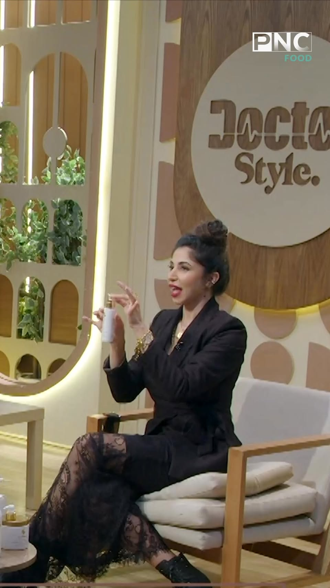
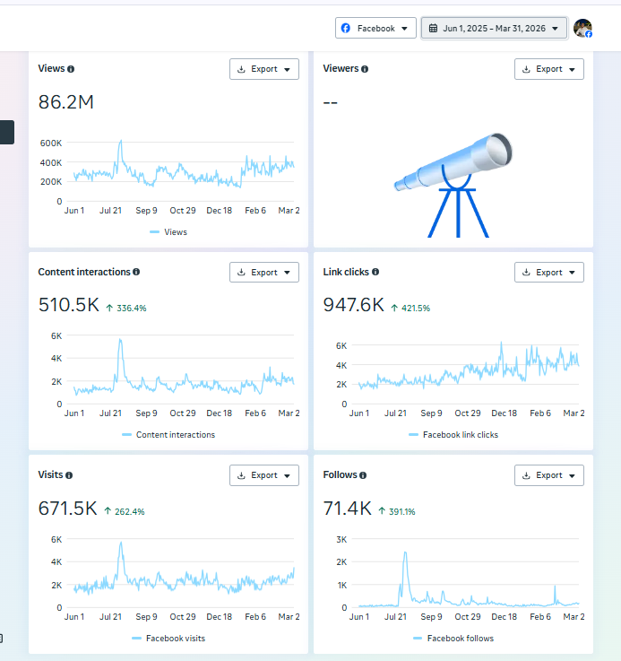
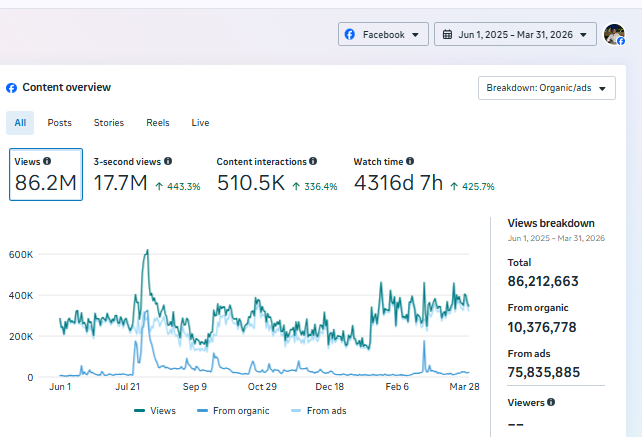
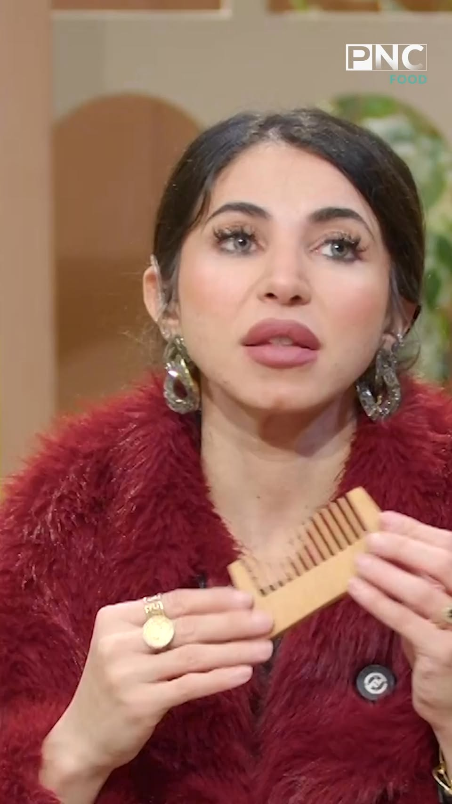
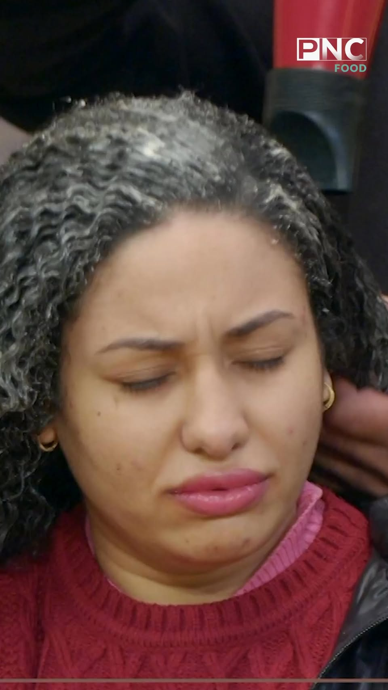
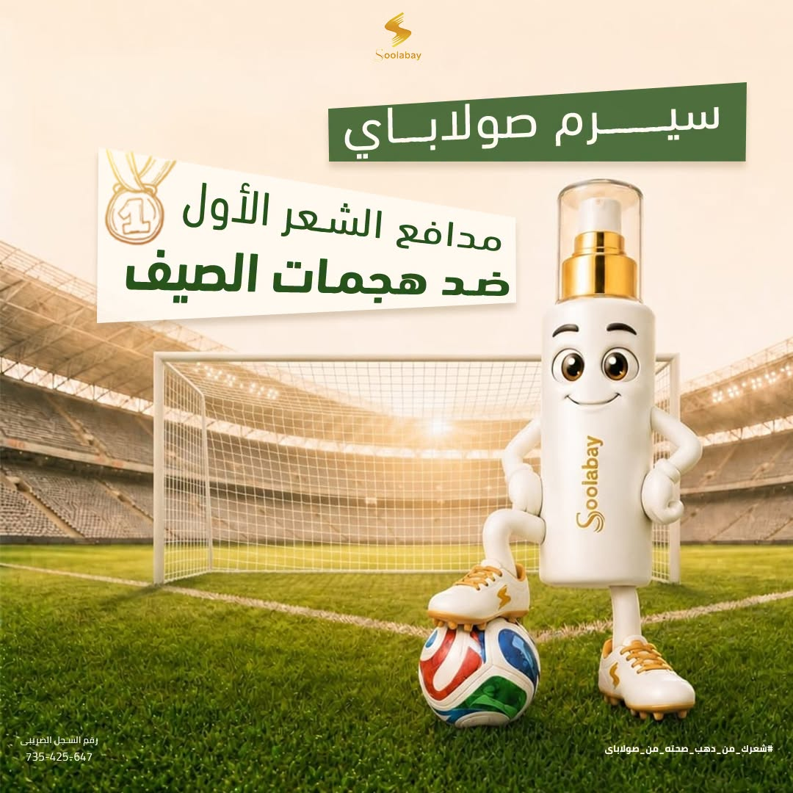
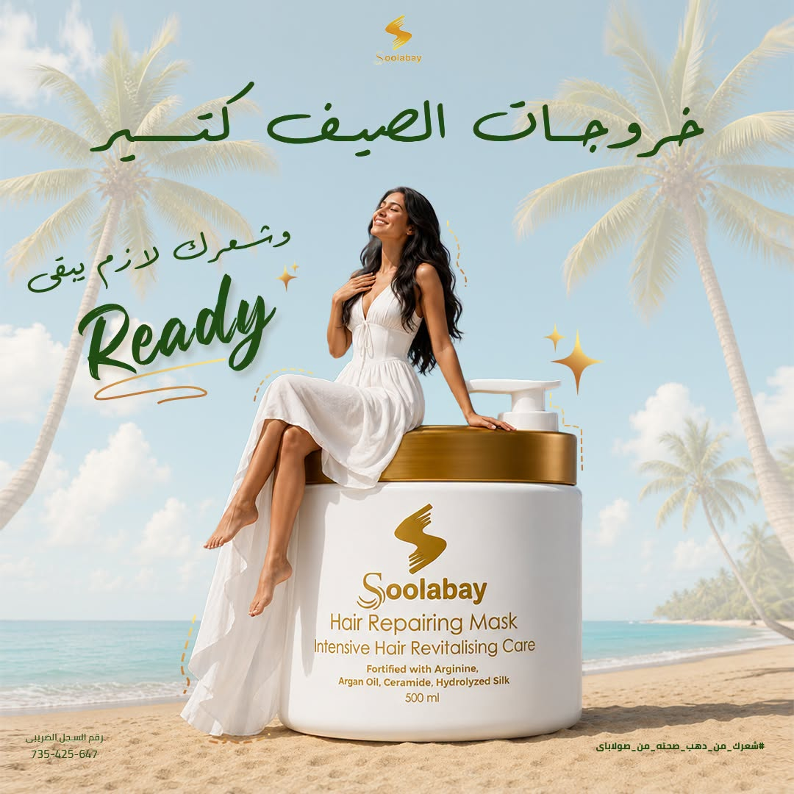
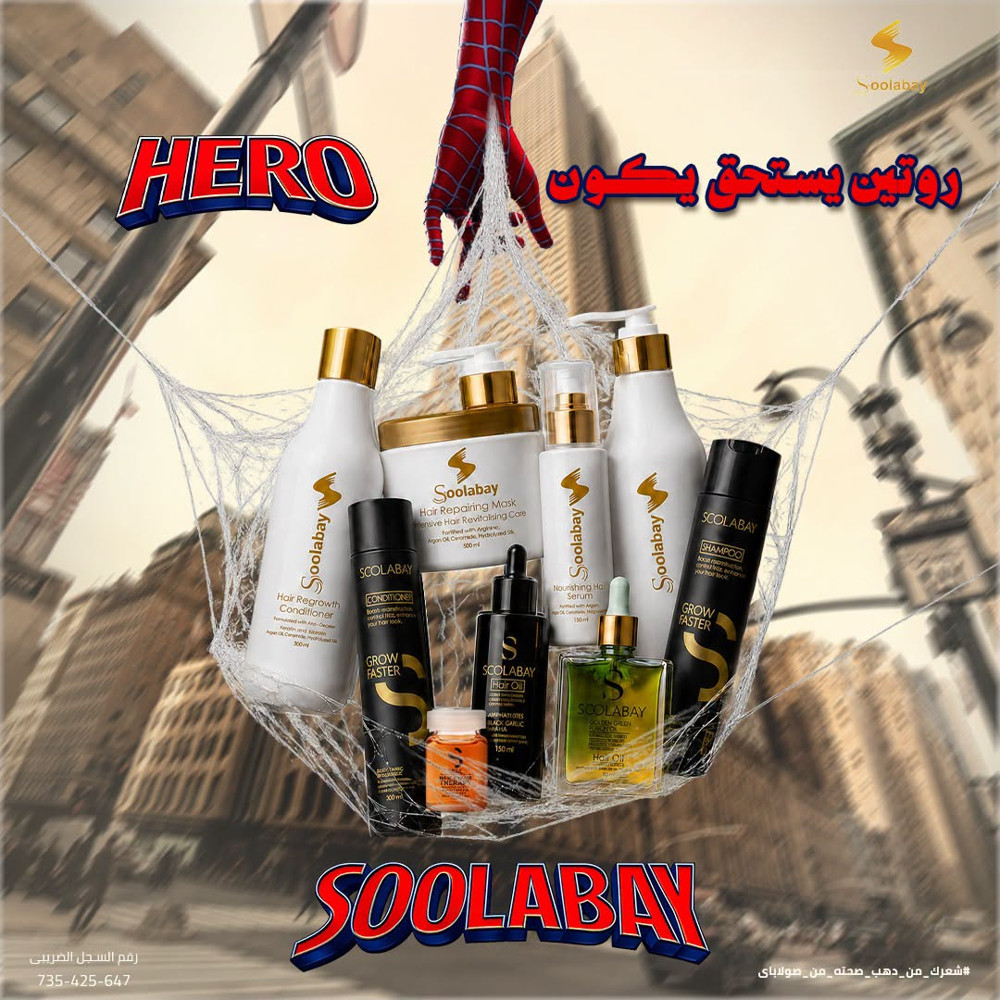
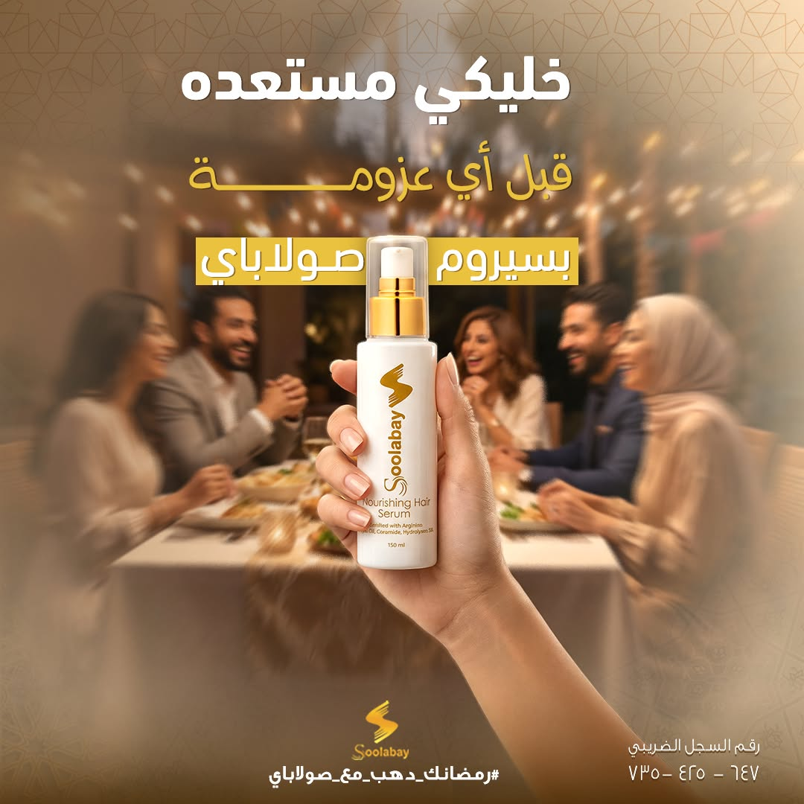

TRUST IN
THE ROOM.
ظهور د. سارة في تجربة المنتج خلّى المنتج يدخل من باب الثقة، مش كإعلان مباشر.
1.27MVIEWS · 989K REACH · 1,623 INTERACTIONS
SOOLABAY / CONTENT SYSTEM CASE STUDY
SOOLABAY / OFFICIAL FACEBOOK PAGE ↗صولاباي براند عناية بالشعر. دور الـContent System كان إنه يعرّف الناس بالحل، يبني ثقة في الاختيار، وبعدها يخلّي الانتقال للـOffer والشراء طبيعي.
مطلوب من المحتوى يعمل انتشار، لكن من غير ما يضيّع الثقة الطبية اللي بتخلي الناس تسمع وتكمل للخطوة اللي بعدها.

THE TENSION
المشكلة ما كانتش إننا نجيب Attention وخلاص. المطلوب كان نبني ثقة، نوصل لناس أكتر، ونخلّي المحتوى يفتح طريق منطقي للـsale بدل ما يبقى كلام منفصل.
BUSINESS OBJECTIVE CONFIRMED BY KHALID / BRAND CONTEXT
02 / WHAT CHANGED THE PLAN
لما راجعنا اللي الناس بتتفاعل معاه، ظهر إن الكلام عن المنتج لوحده مش دايمًا كفاية. اللي كان بيعمل فرق هو إن د. سارة تكون موجودة كصوت موثوق، وإن المحتوى يبدأ من مشكلة شعر محددة الناس حاساها فعلًا.
بعد ما الثقة والـAttention اتبنوا، محتوى الـOffer بقى له توقيت ودور أوضح: ينقل الاهتمام إلى Link Clicks ونية شراء.

03 / PROOF, NOT A GUESS
الـdashboard هنا مش مجرد Screenshot. ده الدليل اللي بنرجع له عشان نفرّق بين حجم الوصول، تفاعل الناس، ونقطة انتقالهم للـlink. الأرقام دي Page-level وبتضم Organic وAds، فمش بننسبها للمحتوى الـOrganic لوحده.
04 / THE CONTENT THAT CARRIED THE IDEA

ظهور د. سارة في تجربة المنتج خلّى المنتج يدخل من باب الثقة، مش كإعلان مباشر.

محتوى عن التشابك والـleave-in mask بدأ من مشكلة ملموسة، فكان أسهل على الناس إنها تتوقف وتتفاعل وتكمل للـlink.

تحذير طبي من جلسات بتضر الشعر؛ محتوى يخلي المشكلة واضحة قبل ما يقدّم أي خطوة تالية.
05 / VISUAL DIRECTION
المحتوى ما كانش Template واحد بيتكرر. الـVisual Direction اشتغل على أربع زوايا: موسم ومناسبة، Product hero، فكرة Pop-culture سريعة، وOffer له مكانه في آخر الرحلة. كل Design هنا من صفحة صولاباي الفعلية وبيفتح المصدر الأصلي.




POST-LEVEL EXPORT / TOP REACH
POST-LEVEL EXPORT / TOP ENGAGEMENT
06 / CONTENT DISTRIBUTION
نفس الفكرة ما كانتش بتنزل Copy/Paste في كل مكان. كل Platform كان له دور في توزيع المحتوى وبناء الرحلة، من الاكتشاف لحد المحادثة.
مساحة للمحتوى التعليمي والـproduct posts، وتفاعل المجتمع حوالين الأسئلة والنتائج.
مكان يبني صورة البراند والثقة بشكل أهدى وأقرب.
محتوى سريع وProblem-led يفتح اكتشاف أوسع ويبدأ من المشكلة الواقعية.
المكان اللي تتحول فيه النية إلى Conversation ويتسلمها فريق المبيعات.
SCOPE NOTE / THIS MAP EXPLAINS ORGANIC CONTENT DISTRIBUTION ONLY. PAID MEDIA, BUDGETS, AND SALES ATTRIBUTION ARE DOCUMENTED IN A SEPARATE MEDIA BUYING CASE STUDY.
06 / PAGE-LEVEL PERFORMANCE
دي نتيجة الصفحة على Facebook خلال فترة القياس، وتشمل الـOrganic والـAds. بنعرضها كأثر النظام على مستوى الصفحة، مش كادعاء إن Post واحد أو Organic لوحده عمل كل النتيجة.
SOURCE: Meta Business Suite, Facebook Page overview, Jun 1 2025—Mar 31 2026. The dashboard shown above reports 10,376,778 organic views and 75,835,885 views from ads within the 86,212,663 total.
08 / WHAT THE DATA CHANGED NEXT
SIGNAL
الدكتور كان بيقوّي الثقة أكتر من Product-first messaging.
DECISION
فضلنا نستخدمه كصوت تعليمي، مش مجرد Endorser للمنتج.
SIGNAL
مشاكل الشعر المحددة أخدت Attention وتفاعل أقوى من الكلام العام.
DECISION
زودنا Problem-led hooks وفيديوهات تعليمية مبنية على سؤال أو وجع حقيقي.
SIGNAL
الـOffer محتاج ييجي بعد الثقة، مش بدلها.
DECISION
وضحنا نقاط البيع داخل المحتوى بعد بناء الثقة. الـPaid Media والـbudget decisions ليهم Case Study منفصلة.
METHOD & SCOPE
الأرقام من Meta Business Suite وPost-level export للفترة من يونيو 2025 إلى مارس 2026. دي Content System Case Study فقط: تثبت شغل المحتوى ونتائجه على مستوى الصفحة؛ أمّا Spend وPaid attribution وSales فهتظهر في Media Buying Case Study مستقلة.
THE LEARNING
الثقة كانت نظام: شخص موثوق، مشكلة محددة، محتوى له دور، وانتقال واضح للـOffer. لما الأجزاء دي اتربطت، المحتوى بقى أداة قرار ونمو—مش مجرد جدول نشر.